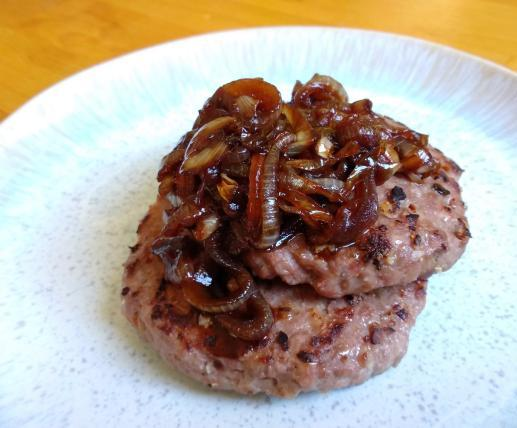

Hambúrguer
Receita de Hambúrguer com cebola caramelizada

Quando falamos de hambúrgueres gourmet um ingrediente que está sempre presente é a cebola caramelizada. Este ingrediente confere um sabor agridoce delicioso à carne do hambúrguer e vai especialmente bem com queijo cheddar! Se você está procurando como fazer hambúrguer caseiro ou hambúrguer gourmet, aqui no TudoReceitas apresentamos para você o passo a passo! Prepare o hambúrguer e a cebola caramelizada em apenas 15 minutos e desfrute desta combinação deliciosa e digna de cardápio de restaurante!.
Veja abaixo a lista de ingredientes e o modo de preparo e faça você também essa delícia.
Ingredientes para fazer Hambúrguer com cebola caramelizada:
- 4 hambúrgueres de bovino
- 2 cebolas
- 2 colheres de sopa de shoyu
- 1 colher de chá de açúcar mascavo
- 1 colher de chá de manteiga
- alho em pó
- pimenta do reino
- sal
Como fazer Hambúrguer com cebola caramelizada:
- Numa frigideira derreta a manteiga e coloque as cebolas cortadas em rodelas, tentando não sobrepôr. Deixe no fogo médio para baixo até ficarem transparentes - cerca de 5 minutos.
- Enquanto isso tempere os hambúrgueres com sal, pimenta e alho.
Dica: Os hambúrgueres deverão estar em temperatura ambiente. Retire-os na geladeira 30 minutos antes de preparar a receita.
- Coloque no fogo uma grelha ou chapa e, quando estiver quente, grelhe os hambúrgueres de um lado e do outro por 5 minutos - vire apenas uma vez.
- Quando as cebolas ficarem transparentes, acrescente o shoyu e o açúcar e misture para envolver nos ingredientes e separar os aros das rodelas. Deixe cozinhar por mais 5 minutos ou até a cebola ficar macia e caramelizada.
- Retire os hambúrgueres grelhados para um prato e cubra com a cebola caramelizada. Está pronto seu hambúrguer artesanal com cebola caramelizada caseira! Sirva com pão de hambúrguer e queijo cheddar e bom apetite!
Veja mais receitas e dicas abaixo: